Week 04 & 05: Computer Aided Design
What is Computer Aided Design(CAD)?
Computer Aided Design, or CAD for short, is the process of using digital means to create and design a 3D or 2D model which can be printed out using a 3D Printer. It is also used more commonly to create models or simulate physics or the look or material of a design.
What programs do we use for CAD?
2D Raster
What is a 2D Raster? It can be created in software such as Gimp and Photoshop. In my case, I will be using Photoshop as it is something I have prior access to and am familiar with.- Some common tools to take note of would be:
- Crop
- Crop is used to simply remove portions of a picture that you do not wish to keep. In Photoshop, it can be accessed by clicking this:

Upon clicking this, margins for cropping the canvas will appear, as such:

By moving and reszing these margins, you will be able to crop out sections for the canvas. You can confirm the crop by simply pressing ENTER when you're done. There are other methods or crop or remove parts of an image that are more precise, which include the use of selection tools or marquees, but that is not needed generally. - Resize and Resolution
- Resize is used to change the image size, which can be easily done within a few steps. Below, I have an image that I'd like to resize, and I have it opened in Photoshop. Now, I will navigate to the image tab in the tabs at the top bar, and select Image Size.

From here, I can change and and control the image size, by editing the various measurement units and the measurements of the image's size itself, along with the resolution of the image.

In Photoshop, you are also able to create a 2D Vector, which can also be done in Inkscape, which is a free alternative.
- Some common tools to take note of that are used to create a 2D Vector are:
- Drawing Shapes and Objects
- Drawing Objects and Shapes are the most basic thing you can do, and there are two tools you can use to do so. The shape tool, and the Brush tool, as shown below.

- Add Text
- If you would like to add some text onto your Vector, you can use the text tool, as shown below.

As you can see, there are multiple types of text you can put according to your liking, depending on your choice, all of which can be selected by right clicking on the tool to change to another type of text. - Trace Bitmap/Vectorize
- When resizing or changing the image resolution, the image quality can often take a hit, and one way to counter that problem is to change the image from a bitmap(JPEG and PNG), to a Vector image by Vectorizing it.
First of all, you will need to create paths, or trace out your bitmap image. In Photoshop, you are able to press CTRL and click the thumbnail in your layers for ease to create a path as shown below.

As shown above, I have selected and created a path, tracing the bitmap as indicated by the dotted line. Now that I have done that I will click the selection tool on the toolbar, and right click the selected image.


By clicking this, it will show you a list of options, and in this case you should pick "Make Work Path...". Upon doing so, it will create a window asking for the "Tolerance". This refers to the number of points used to anchor or draw the image when it is resized. We can leave this at 1 for now.
Now that you have these paths, you will need to choose the Direct Selection Tool, and right click on the image to give you a list of options, from which you will pick "Create Vector Mask", and this will Vectorise your bitmap image.


This means that when you scale this image to different sizes, it will now retain the same quality and not produce jagged lines.
The Brush tool can be used for hand drawn vectors, giving more artistic people more freedom to create vector graphics as they wish, while on the other hand, the Shape tool has multiple preset shapes that you can use, allowing you to use them and manipulate them as you wish.
Tools in Fusion360

This is how Fusion360's user interface looks. Now let's go over the different tools the user is given in Fusion360.

This is the Document Settings tab. You can edit the measurement unit used for the design in this tab.

These are used to change the view of the model. There is also a Home Icon on the top right allowing you to reset the view to the standard orthographics view.

This is used to highlight the various axes and planes on different axes.

This is the Design tab. Click this to access and change the mode of Fusion360. Fusion360 is a versatile software that allows you to do various tasks, and it can be switched between 6 modes. These modes are:
- Design: This gives the user access to the Design Workspace, used primarily to create mechanical designs that contain mostly prismatic geometry. You can access commands to create solid bodies. This is the mode I will be primarily using in the course of this module.
- Render: This is used to generate realistic renderings of the design.
- Animation: This is used to create animations of how the design should be operated or assembled.
- Simulation: This mode performs simulation to determine how loads lead to deformation and failure, which can be used to help people identify or determine if and how a part will fail.
- Manufacture: This generates tool-path strategies for the design to be fabricated.
- Drawing: This is used to load a drawing or animation, such as the 2D Raster or Vector we had drawn and created in Photoshop.
First of all, we should start from creating a 2D Sketch or shape, using this button:
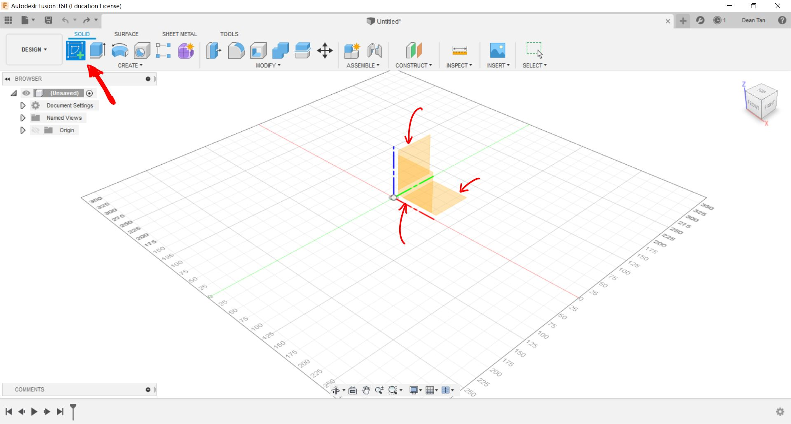 Upon clicking the Sketch Button, it will prompt you to select one of the three planes, and you can pick one of these to draw your shape or sketch on. Upon clicking one of these planes, it will give you this menu. 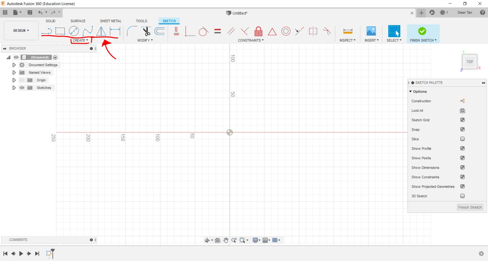 You can click one of the shape preset tools at the top left corner to create your shape, or use the custom line tools if those are not what you need. In this case, we will make a make an egg holder as an example, to demonstrate multiple functions that can be used. To start, we should create a silhoutte on the top plane.
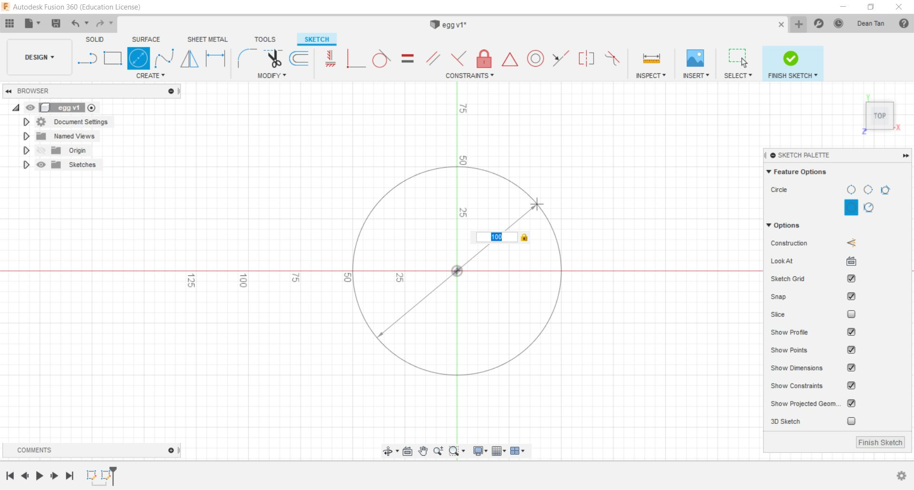 As seen above, we are using the preset circle tool to create a circle which will serve as the base of the egg holder, and we can drag it with the mouse to adjust its size, or input a value to edit the diameter of the circle. The other Preset Tools generally function by the same logic. But this will not always help, especially if you're trying to make multiple sketches on the same plane. 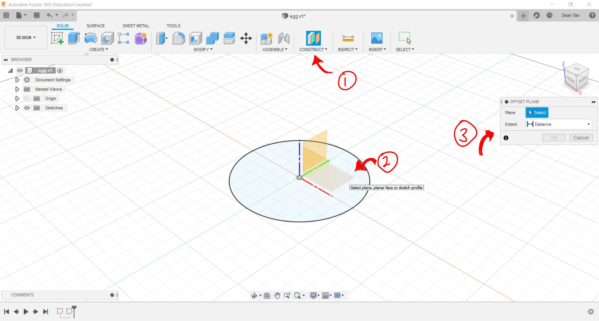 As seen above, first you click the "Construct" Button, which can be found in the "Solid" Tab, which will then prompt you to select one of the three planes shown. Upon clicking one of these planes, it will prompt you in a popup window to select and input the distance between the new and the current selected plane. This will allow you to make sketches on the same dimension, but at different elevations. 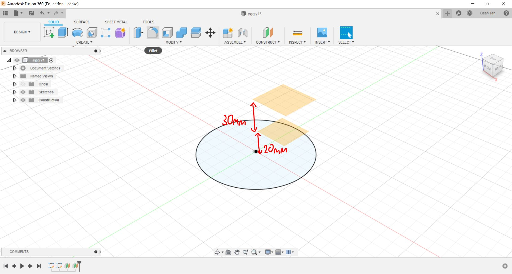 As shown above, I have created two planes, the first 20mm above the plane aligned to the origin point, and the second 30mm above the previous plane created. Now, I can create sketches on those planes through the same process. 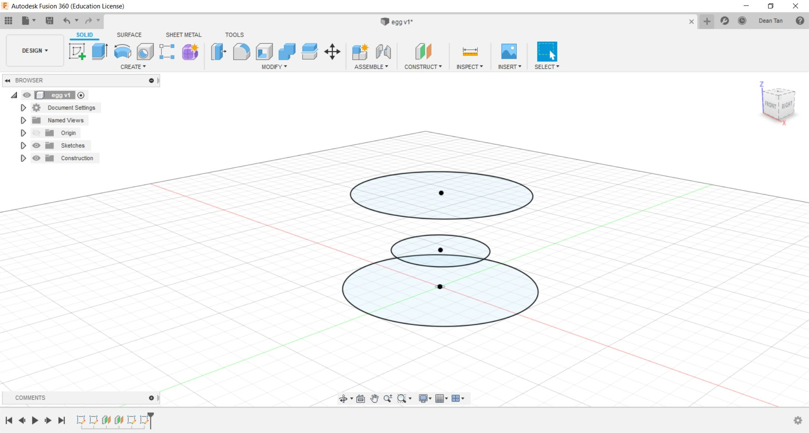 As shown below, I have created multiple sketches at different elevations, but each of these are still 2D. To make them 3D, I can navigate to the "Solid" Tab to access various tools that will allow me to make these sketches 3D models. First of all, we will go through the "Extrude" function. 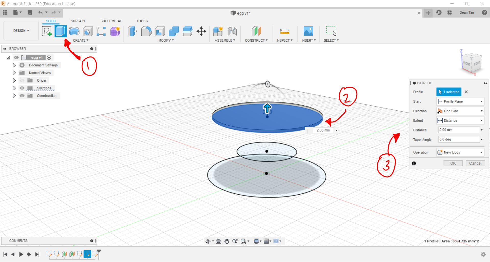 The extrude tool, when selected, will prompt you to select a profile, which in layman terms is essentially a sketch to extrude, which means it will extend the sketch outward in the direction the sketch is facing, which in this case is the top plane. After clicking the profile, it will prompt you to input the measurements or specification of the extrude, which in this case I will put 2mm. 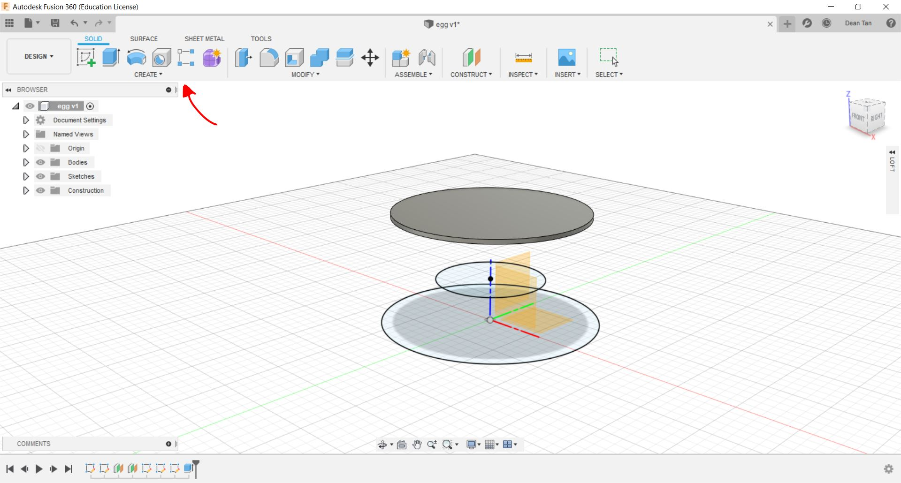 Next, is the loft function, which essentially connects multiple profiles together to form a body. It can be accessed by clicking "Create" to access the drop down menu where "Loft" can be found. 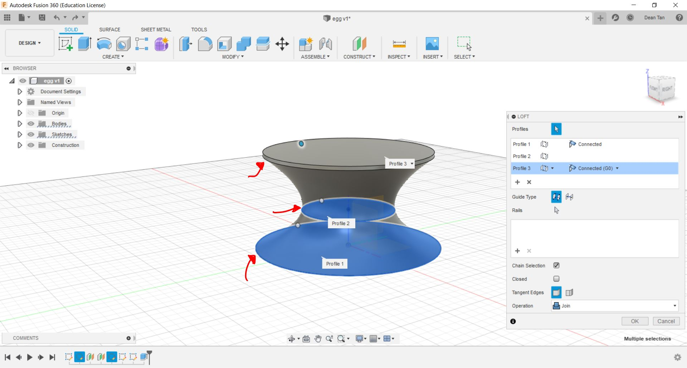 After clicking "Loft", it will give you a pop up on the side, prompting you to select the profiles you would like to loft, and preview it as can be seen above. After clicking "OK", it will join them all together in a loft as one body. 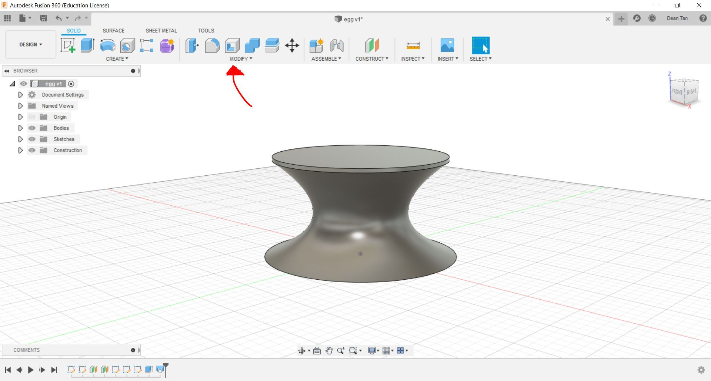 Next, we will go through the function of "Shell". It can be accessed by clicking the above highlighted icon, and show the following below. 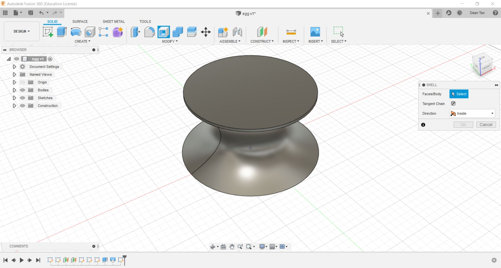 WIth this, you will now be prompted to select a face, and it will essentially create a hole and hollow out the body connected to that. Using the Shell Tab that is given to you, you can control the thickness of the walls of the body. 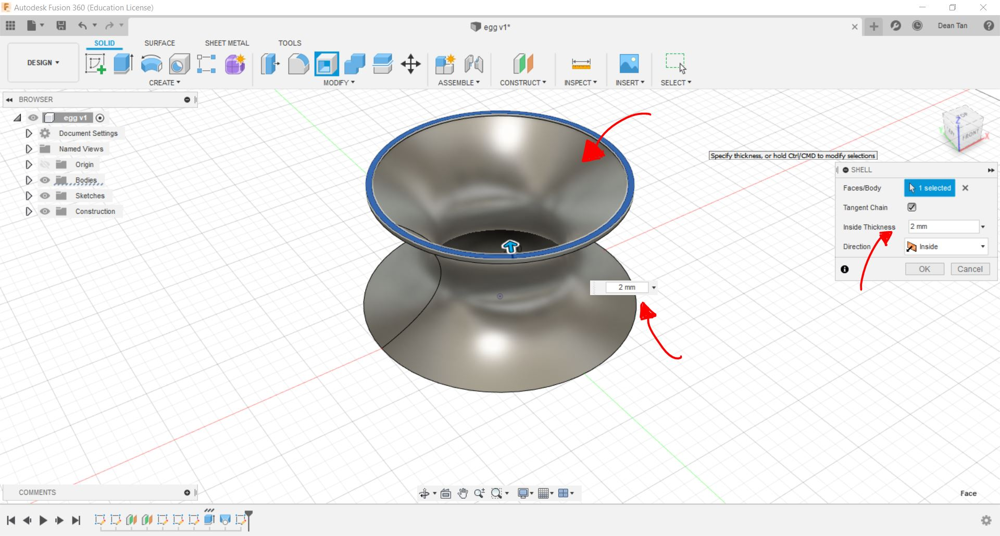 Aside from Extrude and Shell, you can also use the "Fillet" Function, which rounds edges. It can be accessed through the "Modify" Section in the "Solid" tab. 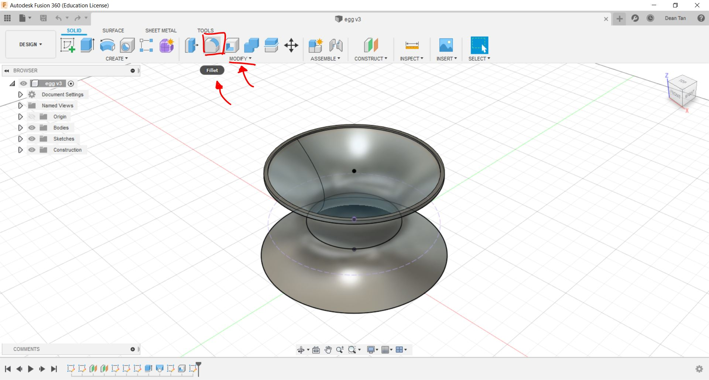 Fillet essentially as mentioned, rounds corner or edges. If you click on the "Fillet" Button, it will prompt you to select an edge, face or feature, as shown below. 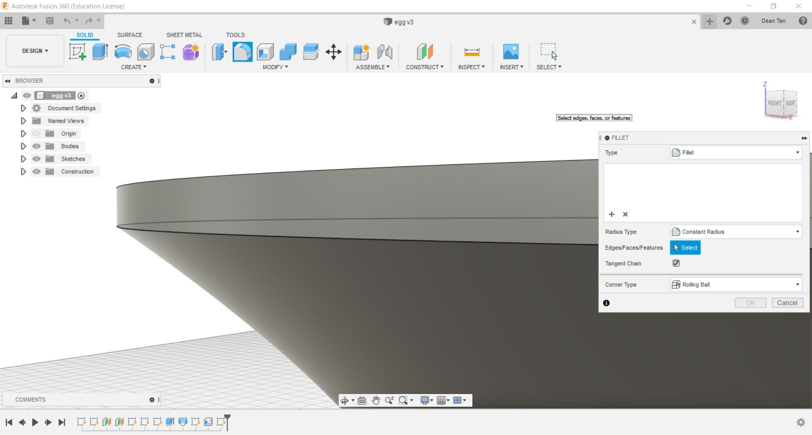 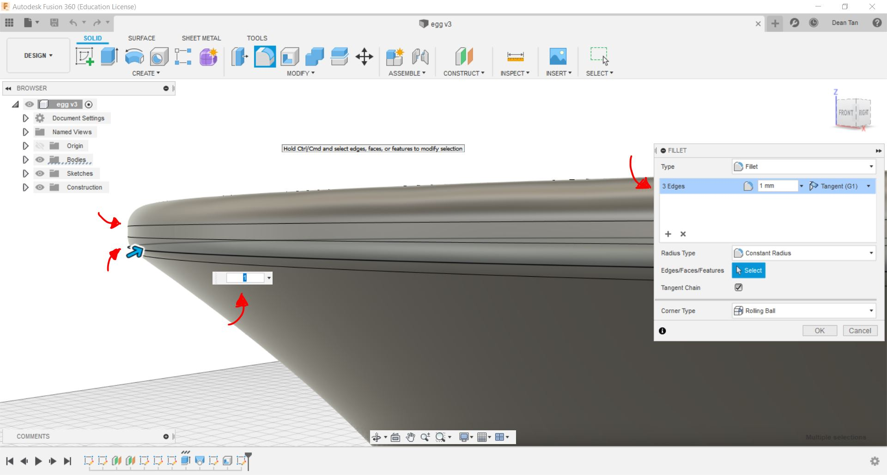 Above you can see a comparison of what Fillet does to selected surfaces or edges, and upon selection, you can see that it will prompt you to input a radius for the curves. If you want to make different curves, you can edit and control that using the Fillet tab on the side.
Aside from these tools, the extrude tool also has some useful functions such as cutting out sections of a design. The following shows a sketch I made at the bottom of the of the body, and I will be using this to cut out sections. 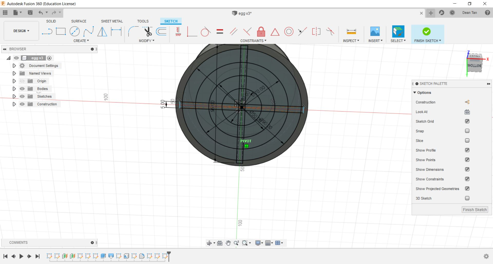 Now, with the selection of the extrude tool, you will have to navigate to the the the Extrude tab to change the "Operation" to "Cut". This will present you with this preview. 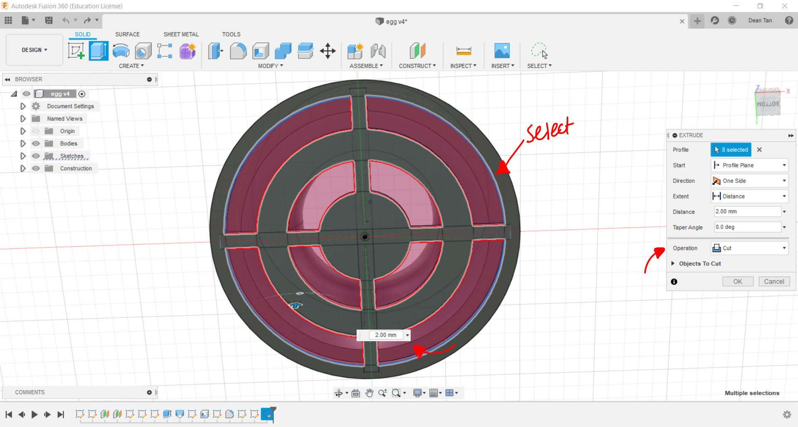 Be sure to take note of how thick part you are cutting is, and set the cut to only as much as you need. In this case, I wish to entirely remove certain sections to save material, and hence I will be cutting it to the thickness of the material, which in this case is 2mm. This is the main part of what I have, and I will be listing some of the 3D designs I have done below, including the one used for this demonstration.
Egg holder demonstration file: Modified Egg Holder with proper dimensions: Coin Tag: Storage Box: